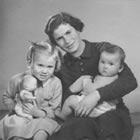

The
War
The
WarWhile Fuchs was writing up his research from the Lake Rukwa expedition and negotiating for a job with one of the East African Geological Surveys, he joined the Territorial Army. When war was declared on Germany in 1939, he became Adjutant to the Second Battalion of the Cambridgeshire Regiment, later joining Brigade HQ as Transport Officer. He was given compassionate leave in 1940 for the birth of his son, Peter.
Given his experience and fluent Swahili, Fuchs volunteered for service in East Africa, but was posted to West Africa, where Swahili was of no use. In the Gold Coast the troops felt left out of the war.
In June 1943 Fuchs was chosen for one of the highly coveted places alloted to the West African Command on the Camberley Staff course in the UK, and in September arrived home for a month's leave, able to get to know his children again.
At the end of a condensed course of four months (reduced from a year), Fuchs qualified and was posted to Second Army HQ in London to work in Civil Affairs. This also gave him the opportunity to visit his father regularly, and they kept in close contact during the following months. Six weeks before D-Day his unit left London for Portsmouth to prepare for the invasion of France.
Four days after D-Day, Fuchs's group crossed the English Channel to 'Gold Beach' on the French coast. Civil Affairs moved in behind the tanks to set up administration, slowly moving through France then advancing rapidly through Belgium and into Holland, where Fuchs stayed for several months. On crossing the border into Germany Fuchs witnessed the first prisoners liberated from Belsen concentration camp - hardly able to walk with their tattered clothes hanging from their emaciated bodies.
The unit travelled through the chaos of devastated Germany to Schleswig-Holstein, where Fuchs became responsible for a Kreis (equivalent to an English county) with his HQ in Plön. The bureaucracy was inevitably stifling and counterproductive, but Fuchs made the system work, learning the language and legal procedures, holding court, managing the dispersal of German refugees returning from the Russian front. During this time he made many friends and learned skills that were to prove useful in later life.
Having volunteered to remain in Plön after the end of the war, by October 1946 Fuchs felt ready to leave Germany, and returned home to his family.